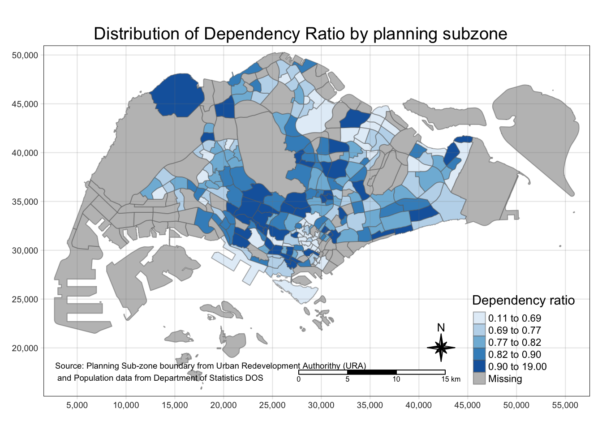
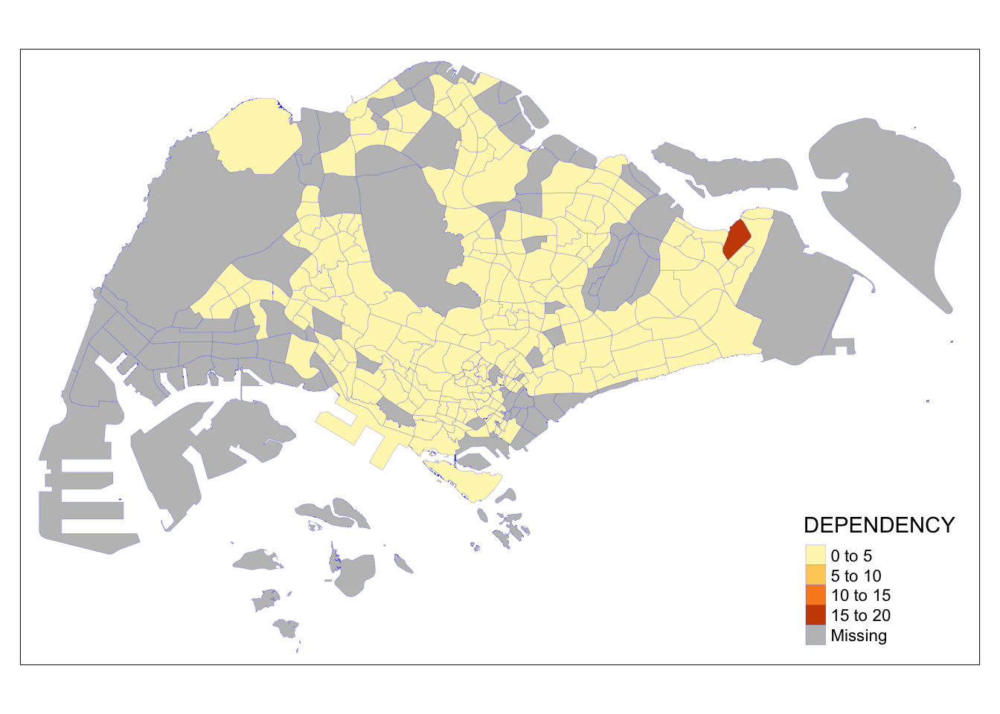
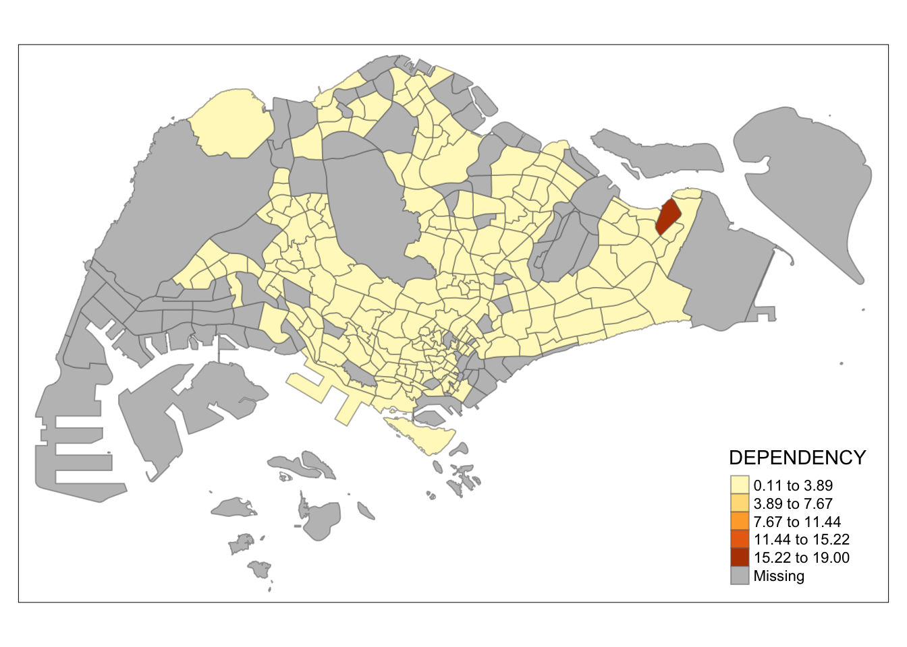

pacman::p_load(sf, tmap, tidyverse)Hands-on Exercise 2: Thematic Mapping and GeoVisualisation with R
welcome to my second hands-on exercise where we will explore dealing with choropleth maps particularly using tmap!
1.0 Overview
In this Hands-On Exercise, we will learn more on creating choropleth maps using geospatial data & attribute data. We will explore functions in tmap to reveal insights through choropleth maps.
2.0 Setup
2.1 Data Sources
Here’s where you’ll find the data we need to create choropleth maps for this week’s exercise:
- Geospatial Data:
- Attribute Data:
2.1.1 What is attribute data?
- describes characteristics or features of data points but doesn’t include spatial (geographical) information. It’s the ‘what’ of the data, as opposed to the ‘where’!
- data does not contain geographic coordinates or shapes but rather descriptive information that can be related back to specific locations or areas defined in your geospatial data.
2.2 Installation of Packages
In this exercise, we’re focusing on tmap, tidyverse & sf!
Here’s a code chunk that uses pacman to ensure we have all these packages ready:
3.0 Importing Data into R
3.1 Importing Geospatial Data
Here we are importing geospatial data in the same way as we did in Hands-on Exercise 1!
mpsz <- st_read(dsn = "data/geospatial",
layer = "MP14_SUBZONE_WEB_PL")Reading layer `MP14_SUBZONE_WEB_PL' from data source
`/Users/noviaantony/Desktop/noviaantony/IS415-GAA/Hands-on_Ex/Hands-on_Ex02/data/geospatial'
using driver `ESRI Shapefile'
Simple feature collection with 323 features and 15 fields
Geometry type: MULTIPOLYGON
Dimension: XY
Bounding box: xmin: 2667.538 ymin: 15748.72 xmax: 56396.44 ymax: 50256.33
Projected CRS: SVY21mpszSimple feature collection with 323 features and 15 fields
Geometry type: MULTIPOLYGON
Dimension: XY
Bounding box: xmin: 2667.538 ymin: 15748.72 xmax: 56396.44 ymax: 50256.33
Projected CRS: SVY21
First 10 features:
OBJECTID SUBZONE_NO SUBZONE_N SUBZONE_C CA_IND PLN_AREA_N
1 1 1 MARINA SOUTH MSSZ01 Y MARINA SOUTH
2 2 1 PEARL'S HILL OTSZ01 Y OUTRAM
3 3 3 BOAT QUAY SRSZ03 Y SINGAPORE RIVER
4 4 8 HENDERSON HILL BMSZ08 N BUKIT MERAH
5 5 3 REDHILL BMSZ03 N BUKIT MERAH
6 6 7 ALEXANDRA HILL BMSZ07 N BUKIT MERAH
7 7 9 BUKIT HO SWEE BMSZ09 N BUKIT MERAH
8 8 2 CLARKE QUAY SRSZ02 Y SINGAPORE RIVER
9 9 13 PASIR PANJANG 1 QTSZ13 N QUEENSTOWN
10 10 7 QUEENSWAY QTSZ07 N QUEENSTOWN
PLN_AREA_C REGION_N REGION_C INC_CRC FMEL_UPD_D X_ADDR
1 MS CENTRAL REGION CR 5ED7EB253F99252E 2014-12-05 31595.84
2 OT CENTRAL REGION CR 8C7149B9EB32EEFC 2014-12-05 28679.06
3 SR CENTRAL REGION CR C35FEFF02B13E0E5 2014-12-05 29654.96
4 BM CENTRAL REGION CR 3775D82C5DDBEFBD 2014-12-05 26782.83
5 BM CENTRAL REGION CR 85D9ABEF0A40678F 2014-12-05 26201.96
6 BM CENTRAL REGION CR 9D286521EF5E3B59 2014-12-05 25358.82
7 BM CENTRAL REGION CR 7839A8577144EFE2 2014-12-05 27680.06
8 SR CENTRAL REGION CR 48661DC0FBA09F7A 2014-12-05 29253.21
9 QT CENTRAL REGION CR 1F721290C421BFAB 2014-12-05 22077.34
10 QT CENTRAL REGION CR 3580D2AFFBEE914C 2014-12-05 24168.31
Y_ADDR SHAPE_Leng SHAPE_Area geometry
1 29220.19 5267.381 1630379.3 MULTIPOLYGON (((31495.56 30...
2 29782.05 3506.107 559816.2 MULTIPOLYGON (((29092.28 30...
3 29974.66 1740.926 160807.5 MULTIPOLYGON (((29932.33 29...
4 29933.77 3313.625 595428.9 MULTIPOLYGON (((27131.28 30...
5 30005.70 2825.594 387429.4 MULTIPOLYGON (((26451.03 30...
6 29991.38 4428.913 1030378.8 MULTIPOLYGON (((25899.7 297...
7 30230.86 3275.312 551732.0 MULTIPOLYGON (((27746.95 30...
8 30222.86 2208.619 290184.7 MULTIPOLYGON (((29351.26 29...
9 29893.78 6571.323 1084792.3 MULTIPOLYGON (((20996.49 30...
10 30104.18 3454.239 631644.3 MULTIPOLYGON (((24472.11 29...How does the above code work?
mpsz: variable where the imported geospatial data will be stored.st_read(): function from sf used for reading spatial data.dsn = "data/geospatial: specifies the data source name (dsn) & points to the folder path where the geospatial data file is locatedlayer= “MP14_SUBZONE_WEB_PL” points to the specific layer or file within the data source that we want to import. In this context, “MP14_SUBZONE_WEB_PL” is the name of the ESRI shapefile (without its file extension) containing the Master Plan 2014 Subzone Boundary data.
3.2 Importing Attribute Data
popdata <- read_csv("data/aspatial/respopagesextod2011to2020.csv")Rows: 984656 Columns: 7
── Column specification ────────────────────────────────────────────────────────
Delimiter: ","
chr (5): PA, SZ, AG, Sex, TOD
dbl (2): Pop, Time
ℹ Use `spec()` to retrieve the full column specification for this data.
ℹ Specify the column types or set `show_col_types = FALSE` to quiet this message.How does the above code work?
popdata: data frame where the imported data will be storedread_csv(): function that reads a CSV file and converts it into a data framedata/aspatial/respopagesextod2011to2020.csv: path to the CSV file
4.0 Data Preparation
4.1 Data Wrangling
Data wrangling is when we clean, structure & enrich raw data into a desired format for better decision making in less time! Data in its raw form often less useful for tasks like analysis or visualization. It might be messy, incomplete, or in an unsuitable structure. Data wrangling helps in:
- Cleaning data (removing or correcting inaccuracies, handling missing values)
- Structuring data efficiently (reshaping, combining)
- Enhancing data (adding new variables or summaries for analysis)
Here is a code chunk used for preparing the data for a thematic map by organizing and summarizing the population data:
popdata2020 <- popdata %>%
filter(Time == 2020) %>%
group_by(PA, SZ, AG) %>%
summarise(`POP` = sum(`Pop`)) %>%
ungroup()%>%
pivot_wider(names_from=AG,
values_from=POP) %>%
mutate(YOUNG = rowSums(.[3:6])
+rowSums(.[12])) %>%
mutate(`ECONOMY ACTIVE` = rowSums(.[7:11])+
rowSums(.[13:15]))%>%
mutate(`AGED`=rowSums(.[16:21])) %>%
mutate(`TOTAL`=rowSums(.[3:21])) %>%
mutate(`DEPENDENCY` = (`YOUNG` + `AGED`)
/`ECONOMY ACTIVE`) %>%
select(`PA`, `SZ`, `YOUNG`,
`ECONOMY ACTIVE`, `AGED`,
`TOTAL`, `DEPENDENCY`)`summarise()` has grouped output by 'PA', 'SZ'. You can override using the
`.groups` argument.How does the above code work?
- Filtering:
filter(Time == 2020)selects only the data for the year 2020. - Grouping and Summarizing:
group_by(PA, SZ, AG)groups the data by Planning Area (PA), Subzone (SZ), and Age Group (AG),summarise()calculates the total population (POP) for each group.
- Pivoting:
pivot_wider()changes the data from long to wide format, making each age group (AG) a separate column. - Calculating Age Groups:
mutate()is used multiple times to create new columns:YOUNG: Sum of population in the age groups from 0-4 to 20-24.ECONOMY ACTIVE: Sum of population in the age groups from 25-29 to 60-64.AGED: Sum of population in the age group 65 and above.TOTAL: Total population across all age groups.DEPENDENCY: Ratio of (YOUNG+AGED) toECONOMY ACTIVE.
- Selecting Columns:
select()picks the final columns for the analysis.
How has the data transformed?
(insert image to visualize)
4.2 Joining the attribute data and geospatial data
Joining geospatial and attribute data is crucial in spatial analysis for combining location-specific information (where) with descriptive details (what) to create enriched datasets for mapping and analysis. By combining the two datas,we can visualize demographic information like population density or age distribution right on the map of an area!
Here is a code chunk that uses head() to view the first few rows of the geospatial (mpsz) & attribute (popdata2020):
head(popdata2020)# A tibble: 6 × 7
PA SZ YOUNG `ECONOMY ACTIVE` AGED TOTAL DEPENDENCY
<chr> <chr> <dbl> <dbl> <dbl> <dbl> <dbl>
1 Ang Mo Kio Ang Mo Kio Town Cent… 1440 2610 760 4810 0.843
2 Ang Mo Kio Cheng San 6640 15460 6050 28150 0.821
3 Ang Mo Kio Chong Boon 6150 13950 6470 26570 0.905
4 Ang Mo Kio Kebun Bahru 5540 12090 5120 22750 0.882
5 Ang Mo Kio Sembawang Hills 2100 3410 1310 6820 1
6 Ang Mo Kio Shangri-La 3960 8420 3610 15990 0.899head(mpsz)Simple feature collection with 6 features and 15 fields
Geometry type: MULTIPOLYGON
Dimension: XY
Bounding box: xmin: 24468.89 ymin: 28369.47 xmax: 32362.39 ymax: 30542.74
Projected CRS: SVY21
OBJECTID SUBZONE_NO SUBZONE_N SUBZONE_C CA_IND PLN_AREA_N
1 1 1 MARINA SOUTH MSSZ01 Y MARINA SOUTH
2 2 1 PEARL'S HILL OTSZ01 Y OUTRAM
3 3 3 BOAT QUAY SRSZ03 Y SINGAPORE RIVER
4 4 8 HENDERSON HILL BMSZ08 N BUKIT MERAH
5 5 3 REDHILL BMSZ03 N BUKIT MERAH
6 6 7 ALEXANDRA HILL BMSZ07 N BUKIT MERAH
PLN_AREA_C REGION_N REGION_C INC_CRC FMEL_UPD_D X_ADDR
1 MS CENTRAL REGION CR 5ED7EB253F99252E 2014-12-05 31595.84
2 OT CENTRAL REGION CR 8C7149B9EB32EEFC 2014-12-05 28679.06
3 SR CENTRAL REGION CR C35FEFF02B13E0E5 2014-12-05 29654.96
4 BM CENTRAL REGION CR 3775D82C5DDBEFBD 2014-12-05 26782.83
5 BM CENTRAL REGION CR 85D9ABEF0A40678F 2014-12-05 26201.96
6 BM CENTRAL REGION CR 9D286521EF5E3B59 2014-12-05 25358.82
Y_ADDR SHAPE_Leng SHAPE_Area geometry
1 29220.19 5267.381 1630379.3 MULTIPOLYGON (((31495.56 30...
2 29782.05 3506.107 559816.2 MULTIPOLYGON (((29092.28 30...
3 29974.66 1740.926 160807.5 MULTIPOLYGON (((29932.33 29...
4 29933.77 3313.625 595428.9 MULTIPOLYGON (((27131.28 30...
5 30005.70 2825.594 387429.4 MULTIPOLYGON (((26451.03 30...
6 29991.38 4428.913 1030378.8 MULTIPOLYGON (((25899.7 297...4.2.1 Preparing for the Join
Before joining, data fields used to match records must be consistent. This step is crucial because the matching fields in the geospatial data (mpsz) are in uppercase. For a successful join, the values in the corresponding columns of both dataframes must be consistent in terms of case (upper or lower).
popdata2020 <- popdata2020 %>%
mutate_at(.vars = vars(PA, SZ),
.funs = list(toupper)) %>%
filter(`ECONOMY ACTIVE` > 0)How does the above code work?
mutate_at(): modifies specific columns in the popdata2020 dataframe. Specifically, it’s converting the values in the PA (Planning Area) and SZ (Subzone) columns to uppercase.filter(): retains only the rows where the ECONOMY ACTIVE population is greater than 0. - ensures that the analysis focuses on areas with an economically active population
combination of mutate_at for data transformation and filter for data selection is a common approach in data preparation, especially when dealing with large datasets.
4.2.2 Joining the two data types
mpsz_pop2020 <- left_join(mpsz, popdata2020,
by = c("SUBZONE_N" = "SZ"))left_join()from dplyr package: merges the geospatial data (mpsz) with the attribute data (popdata2020).- merge is done on the basis of the SUBZONE_N column in mpsz and the SZ column in popdata2020. The
byargument specifies that SUBZONE_N in mpsz corresponds to SZ in popdata2020.
- merge is done on the basis of the SUBZONE_N column in mpsz and the SZ column in popdata2020. The
a left join is used because the primary interest is in the geospatial data (mpsz), and the goal is to enhance this data with the additional attributes from popdata2020. The left join ensures that all areas in the geospatial dataset are retained, even if they don’t have a matching record in the attribute data.
finally, mpsz_pop2020, is a combined dataset that includes the spatial information from mpsz (like the boundaries of each subzone) and the relevant demographic statistics from popdata2020 (like the age distribution and economic activity status)!
5.0 Choropleth Mapping Geospatial Data with tmap
Choropleth maps are a type of thematic map where areas (like countries, states, or in your case, subzones) are shaded or colored in proportion to a statistical value associated with these areas. They are an effective way to visualize data patterns and variations across different geographical regions.
Two Approaches to Choropleth Mapping
Quick Mapping with qtm(): when you need a quick and straightforward visualization. It’s less customizable but ideal for quick assessments or initial analysis.
Customizable Mapping with tmap Elements: offers more flexibility and control over the map’s appearance. It’s suitable when you need to fine-tune the map’s details for presentations or detailed analyses.
5.1 Quick Thematic Plot with qtm()
tmap_mode("plot")tmap mode set to plottingqtm(mpsz_pop2020,
fill = "DEPENDENCY")
How does the above code work?
tmap_mode("plot"): sets the tmap package to produce static plots. The tmap package can generate both static (plot) and interactive (view) maps, and here we are specifying that we want a static map.qtm(mpsz_pop2020, fill = "DEPENDENCY"): qtm() is used to quickly generate a choropleth map.-
mpsz_pop2020: dataset used for the map after joining geospatial data with attribute datafill= “DEPENDENCY”: This argument specifies what variable from the dataset should be used to determine the coloring of the map. In this case, the map areas will be colored based on the values of the “DEPENDENCY” variable
After running the code, the map created visually represents the “DEPENDENCY” data across different subzones. The coloring intensity or shade in each subzone corresponds to the value of the “DEPENDENCY” variable, providing an immediate visual understanding of how this variable varies geographically.
5.2 Creating a choropleth map by using tmap’s elements
The tmap package in R provides extensive capabilities for creating highly customized choropleth maps. Unlike qtm(), which is great for quick and basic visualizations, tmap offers a suite of functions that allow for detailed customization, making it ideal for creating high-quality, publication-ready maps.
tm_shape(mpsz_pop2020)+
tm_fill("DEPENDENCY",
style = "quantile",
palette = "Blues",
title = "Dependency ratio") +
tm_layout(main.title = "Distribution of Dependency Ratio by planning subzone",
main.title.position = "center",
main.title.size = 1.2,
legend.height = 0.45,
legend.width = 0.35,
frame = TRUE) +
tm_borders(alpha = 0.5) +
tm_compass(type="8star", size = 2) +
tm_scale_bar() +
tm_grid(alpha =0.2) +
tm_credits("Source: Planning Sub-zone boundary from Urban Redevelopment Authorithy (URA)\n and Population data from Department of Statistics DOS",
position = c("left", "bottom"))
How does the above code work?
tmap_mode("plot"): sets the mode to static plotting.tm_shape(mpsz_pop2020): defines the spatial data for the map tompsz_pop2020tm_fill("DEPENDENCY", ...): colours the map areas based on the “DEPENDENCY” variable.- style is set to “quantile”, which classifies the data into equally-sized groups.
- palette is “Blues”, creating a range of blue shades for different values.
tm_layout(...): customizes the overall layout of the map. This includes setting the main title, adjusting the legend’s size and position, and adding a frame around the map.tm_borders(alpha = 0.5): adds borders to the map regions with a specified level of transparency (alpha).tm_compass()andtm_scale_bar(): Adds a compass and scale bar to the maptm_grid(alpha =0.2): adds a grid overlay to the map with a specified transparency.tm_credits(...): places credits or sources on the map & specifies position of this information.
5.2.1 Drawing a Base Map
In creating a thematic or choropleth map, the first step is to establish a base map. This forms the foundation upon which additional data layers and statistical information will be overlaid.
tm_shape(mpsz_pop2020) +
tm_polygons()
How does the above code work?
tm_shape(mpsz_pop2020): initializes the drawing process in tmap by specifying the dataset to be used (mpsz_pop2020)tm_polygons(): adds a layer of polygons to the map. Since no specific variables are assigned to tm_polygons() in this step, it will simply draw the boundaries of the planning subzones contained within mpsz_pop2020. This creates a basic map that outlines each subzone but does not yet convey any additional statistical information.
5.2.2 Drawing a Choropleth Map using tm_polygons()
tm_shape(mpsz_pop2020)+
tm_polygons("DEPENDENCY")
How does the above code work?
tm_polygons("DEPENDENCY"): passing the variable “DEPENDENCY” to tm_polygons() will tell tmap to shade or color each polygon (subzone) based on the values of the DEPENDENCY variable in mpsz_pop2020.
Tada! now we have a choropleth map where each planning subzone is coloured in accordance with its DEPENDENCY ratio.
5.2.3 Drawing a Choropleth Map using tm_fill() Only
tm_shape(mpsz_pop2020)+
tm_fill("DEPENDENCY")
How does the above code work?
tm_fill("DEPENDENCY"): instructs tmap to color (or ‘fill’) each polygon based on the values of the “DEPENDENCY” variable from the mpsz_pop2020 dataset.
if no specific color palette is mentioned, tm_fill() uses a default color scheme.
5.2.4 Drawing a choropleth map using tm_fill & tm_borders
For a more detailed and visually distinct map, borders can be added to each of the polygons (subzones).
tm_shape(mpsz_pop2020)+
tm_fill("DEPENDENCY") +
tm_borders(lwd = 0.1, alpha = 1, col = 'blue')
How does the above code work?
tm_borders(lwd = 0.1, alpha = 1, col = 'blue'): After filling the polygons, this line adds borders to them.lwd = 0.1sets the line width of the borders.alpha = 1determines the opacity of the border lines (1 means fully opaque).col = 'blue'specifies the color of the borders (in this case, blue).
5.3 Data Classification Methods in Choropleth Mapping with tmap
When creating choropleth maps, the choice of data classification method can significantly impact the visual outcome. This is especially important when dealing with outliers in the data.
The Issue With Outliers
if there’s a significant outlier in the data (like one subzone with an exceptionally high or low value), it can skew the color distribution in the map, leading to a lack of differentiation among other areas. - example: a dark red subzone stands out as an outlier, while other areas are pale yellow, indicating that the data’s range is heavily influenced by this outlier.
5.3.1 Plotting Choropleth Maps with Built-In Classification Methods
Jenks Classification
Jenks Classification tends to produce more ‘natural’ groupings by minimizing variance within classes and maximizing variance between classes.
tm_shape(mpsz_pop2020)+
tm_fill("DEPENDENCY",
n = 5,
style = "jenks") +
tm_borders(alpha = 0.5)
Let’s try to use different number of classes
Notice that when we use too many classes, it becomes difficult to differentiate between them
tm_shape(mpsz_pop2020)+
tm_fill("DEPENDENCY",
n = 15,
style = "jenks") +
tm_borders(alpha = 0.5)On the other hand, when the number of classes are too little, the data becomes oversimplified
tm_shape(mpsz_pop2020)+
tm_fill("DEPENDENCY",
n = 2,
style = "jenks") +
tm_borders(alpha = 0.5)Equal Classification
Equal Classification divides the data range into equal intervals regardless of how the actual values are distributed.
tm_shape(mpsz_pop2020)+
tm_fill("DEPENDENCY",
n = 5,
style = "equal") +
tm_borders(alpha = 0.5)
summary(mpsz_pop2020$DEPENDENCY) Min. 1st Qu. Median Mean 3rd Qu. Max. NA's
0.1111 0.7147 0.7866 0.8585 0.8763 19.0000 92 5.3.2 Plotting Choropleth Map with Custom Break
In choropleth mapping, apart from using built-in classification methods, you have the option to set custom breaks for categorizing your data. This is particularly useful when you have specific thresholds or categories in mind that you want to visualize.
- Based on the summary, break points are chosen at 0.60, 0.70, 0.80, and 0.90.
- In tmap, breaks should include the minimum and maximum values. So, if you want n categories, you need n+1 break points.
Here is a code chunk to set up breaks:
tm_shape(mpsz_pop2020)+
tm_fill("DEPENDENCY",
breaks = c(0, 0.60, 0.70, 0.80, 0.90, 1.00)) +
tm_borders(alpha = 0.5)Warning: Values have found that are higher than the highest break
How does the above code work?
tm_shape(mpsz_pop2020): sets up the base map using thempsz_pop2020dataset. tm_shape is essential for defining which spatial data the following mapping functions (like tm_fill and tm_borders) will apply to.tm_fill("DEPENDENCY", breaks = c(0, 0.60, 0.70, 0.80, 0.90, 1.00)):tm_fillis used to color the map based on a specific variable from the dataset. Here, the variable is “DEPENDENCY.”breaksargument explicitly sets the categories for coloring. In this case, the breaks are set at 0, 0.60, 0.70, 0.80, 0.90, and 1.00. This means the map will have different color shades for the ranges defined by these breaks (e.g., 0-0.60, 0.60-0.70, etc.).Each range will be assigned a different color or shade, with the color intensity or hue representing the value of the DEPENDENCY ratio within that range.
tm_borders(alpha = 0.5): adds borders to each of the subzones on the map,alphaparameter controls the transparency of the borders
5.4 Colour Scheme
5.4.1 ColourBrew Palette
to change the colour, we assign the preferred colour to palette argument of tm_fill() as shown in the code chunk below.
tm_shape(mpsz_pop2020)+
tm_fill("DEPENDENCY",
n = 6,
style = "quantile",
palette = "PuRd") +
tm_borders(alpha = 0.5)reverse the colour shading, add a “-” prefix.
tm_shape(mpsz_pop2020)+
tm_fill("DEPENDENCY",
style = "quantile",
palette = "-Greens") +
tm_borders(alpha = 0.5)
5.5 Map Layout
Customizing map layouts in tmap helps us in tailoring the appearance of your choropleth maps! This can include modifying elements like legends, styles, and adding cartographic furniture like compasses and scale bars.
5.5.1 Map Legend
Here is a code chunk for modifying the legend:
tm_shape(mpsz_pop2020)+
tm_fill("DEPENDENCY",
style = "jenks",
palette = "Blues",
legend.hist = TRUE,
legend.is.portrait = TRUE,
legend.hist.z = 0.1) +
tm_layout(main.title = "Distribution of Dependency Ratio by planning subzone \n(Jenks classification)",
main.title.position = "center",
main.title.size = 1,
legend.height = 0.45,
legend.width = 0.35,
legend.outside = FALSE,
legend.position = c("right", "bottom"),
frame = FALSE) +
tm_borders(alpha = 0.5)
How does the above code work?
legend Options: helps to change the legend’s format and appearance (e.g., histogram format, portrait orientation).
tm_layout:sets title, legend size, position, and frame.
5.5.2 Map Style
Changing the overall style of the map can be done using tmap_style():
Here is a code chunk for changing the style of the map:
tm_shape(mpsz_pop2020)+
tm_fill("DEPENDENCY",
style = "quantile",
palette = "-Greens") +
tm_borders(alpha = 0.5) +
tmap_style("classic")tmap style set to "classic"other available styles are: "white", "gray", "natural", "cobalt", "col_blind", "albatross", "beaver", "bw", "watercolor" 
How does the above code work?
tmap_style("classic"): applies a predefined style setting to the map, altering various layout settings at once.
5.5.3 Cartographic Furniture
tmap also also provides arguments to draw other map furniture such as compass, scale bar and grid lines.
tm_shape(mpsz_pop2020)+
tm_fill("DEPENDENCY",
style = "quantile",
palette = "Blues",
title = "No. of persons") +
tm_layout(main.title = "Distribution of Dependency Ratio \nby planning subzone",
main.title.position = "center",
main.title.size = 1.2,
legend.height = 0.45,
legend.width = 0.35,
frame = TRUE) +
tm_borders(alpha = 0.5) +
tm_compass(type="8star", size = 2) +
tm_scale_bar(width = 0.15) +
tm_grid(lwd = 0.1, alpha = 0.2) +
tm_credits("Source: Planning Sub-zone boundary from Urban Redevelopment Authorithy (URA)\n and Population data from Department of Statistics DOS",
position = c("left", "bottom"))
How does the above code work?
- adding Elements: incorporates compass, scale bar, and grid for additional geographic context and information.
tm_credits: useful for adding source information or credits.
5.6 Drawing Small Multiple Choropleth Maps
Facet maps allow for side-by-side comparisons of different map visualizations, such as changes over time or across different variables.
5.6.1 Multiple Values in Aesthetic Arguments
You can create facet maps by assigning multiple values to at least one of the aesthetic arguments in tmap:
In this code chunk, two variables (YOUNG, AGED) are mapped, allowing comparison between different demographic groups:
tm_shape(mpsz_pop2020)+
tm_fill(c("YOUNG", "AGED"),
style = "equal",
palette = "Blues") +
tm_layout(legend.position = c("right", "bottom")) +
tm_borders(alpha = 0.5) +
tmap_style("white")tmap style set to "white"other available styles are: "gray", "natural", "cobalt", "col_blind", "albatross", "beaver", "bw", "classic", "watercolor" 
In this code chunk, we combine different classification styles (equal, quantile) and palettes for each variable:
tm_shape(mpsz_pop2020)+
tm_polygons(c("DEPENDENCY","AGED"),
style = c("equal", "quantile"),
palette = list("Blues","Greens")) +
tm_layout(legend.position = c("right", "bottom"))
5.6.2 Group-By Variable in tm_facets()
This code chunk creates facet maps based on the “REGION_N” variable. It divides the map into separate panels for each region, allowing for regional comparisons of the “DEPENDENCY” variable:
tm_shape(mpsz_pop2020) +
tm_fill("DEPENDENCY",
style = "quantile",
palette = "Blues",
thres.poly = 0) +
tm_facets(by="REGION_N",
free.coords=TRUE,
drop.shapes=TRUE) +
tm_layout(legend.show = FALSE,
title.position = c("center", "center"),
title.size = 20) +
tm_borders(alpha = 0.5)Warning: The argument drop.shapes has been renamed to drop.units, and is
therefore deprecated
tm_facets()is used with free.coords=TRUE and drop.shapes=TRUE, offering flexibility in how each facet is displayed.
5.6.3 Multiple Stand-Alone Maps with tmap_arrange()
youngmap <- tm_shape(mpsz_pop2020)+
tm_polygons("YOUNG",
style = "quantile",
palette = "Blues")
agedmap <- tm_shape(mpsz_pop2020)+
tm_polygons("AGED",
style = "quantile",
palette = "Blues")
tmap_arrange(youngmap, agedmap, asp=1, ncol=2)
- Creating Individual Maps: This code creates two separate maps,
youngmapandagedmap, each focusing on different demographic groups (“YOUNG” and “AGED”). Both use a “quantile” style for data classification and a “Blues” color palette. - Arranging Maps Side-by-Side:
tmap_arrange()is used to place these two maps side by side for easy comparison. Theasp=1andncol=2arguments ensure that the maps have the same ### 5.7 Mappping Spatial Object Meeting a Selection Criterion
tm_shape(mpsz_pop2020[mpsz_pop2020$REGION_N=="CENTRAL REGION", ])+
tm_fill("DEPENDENCY",
style = "quantile",
palette = "Blues",
legend.hist = TRUE,
legend.is.portrait = TRUE,
legend.hist.z = 0.1) +
tm_layout(legend.outside = TRUE,
legend.height = 0.45,
legend.width = 5.0,
legend.position = c("right", "bottom"),
frame = FALSE) +
tm_borders(alpha = 0.5)Warning in pre_process_gt(x, interactive = interactive, orig_crs =
gm$shape.orig_crs): legend.width controls the width of the legend within a map.
Please use legend.outside.size to control the width of the outside legend
6.0 Final Reflections
Diving into choropleth maps has been a real eye-opener! I never realized how much you could reveal with colors and shapes on a map. It’s been fun and a bit challenging getting the hang of tmap, but super rewarding to see all that data come to life.